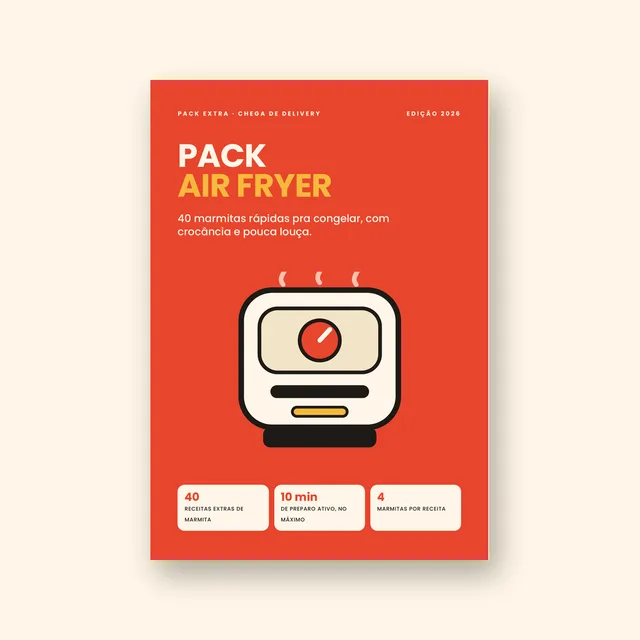

✓Pedido confirmado. O acesso ao seu guia chega no seu e-mail.
Complemento opcional · só nesta página
Quer mais 40 marmitas feitas na air fryer?
O Pack Air Fryer é um segundo PDF, pensado pra quem tem air fryer em casa: receitas rápidas, com a crocância que o forno e o micro-ondas não entregam.

- 40 receitas novas: frango, carne bovina, suína e linguiça, peixes, ovos e vegetarianas, legumes e acompanhamentos.
- Tabela de tempos e temperaturas pra cada tipo de alimento.
- Como guardar e esquentar sem perder a crocância.
- Misture e combine e uma semana na air fryer já montada.
- Combina com as receitas do guia que você acabou de comprar.
R$ 27pagamento único · PDF com acesso na hora
Precisa de air fryer. Os 10 minutos das receitas são de preparo ativo, fora o tempo de cozimento. Garantia de 7 dias.